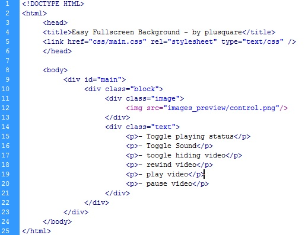
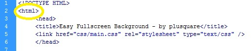
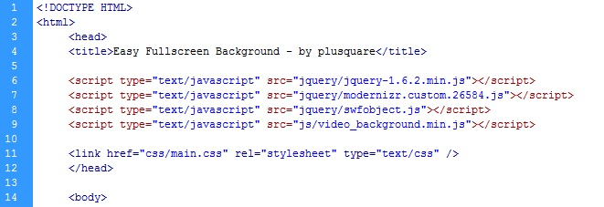
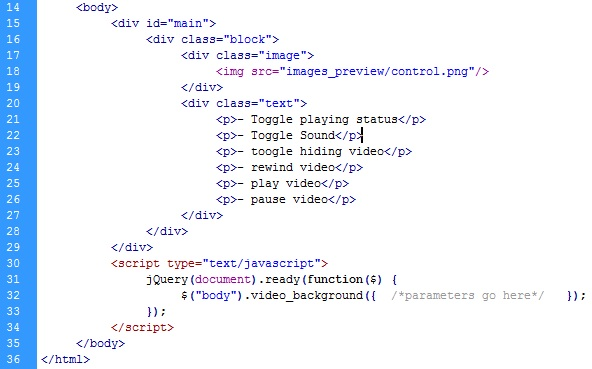
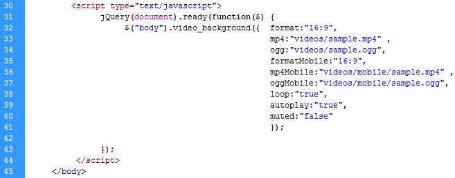
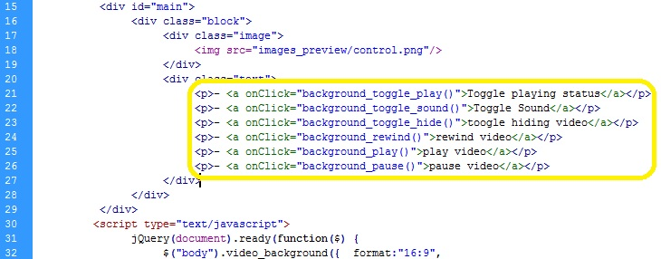

Thank you for purchasing my theme. If you have any questions that are beyond the scope of this help file, please feel free to email via my user page contact form here. Thanks so much!
In this chapter I'll give you a brief explanation of the files you have in the download package and which files do you need to upload.
In the download package you have the following:
You'll need to upload the jquery and js folders and all of it's contents and also the swf file from the flash folder for the script to work properly.
Here I'll explain to you how to add a video background to your site and explain to you which options you have.
I'll explain how you can use this script with a step by step example. So let's imagine I already have some code or my site complete, in my example I have the following:

It's a quite simple html and has some text for controls that we'll use later.
Check if you site initial html tag is only <html> if it isn't change it to exaclty the same as the following:

Why? Because this tells the user 's browser that this will be html 5. So it can validate the video tag.
So the first to do is to import all you'll need for the script to run. What will you need to import:
So let's get it going. You'll have to add 4 lines in your head section:
<script type="text/javascript" src="jquery/jquery-1.6.2.min.js"></script> <script type="text/javascript" src="jquery/modernizr.custom.26584.js"></script> <script type="text/javascript" src="jquery/swfobject.js"></script> <script type="text/javascript" src="js/video_background.min.js"></script>
You should add these lines right below the title tag, you'll get something as:

Now you have all the scripts you'll need to setup your video background.
Now you can step to the actual creation of your video background. For this you'll have to call a function with some paramteres that I'll explain as we go.
Before explaining which parameters and options you have available I'll tell you where and what you should put the call to the script.
You should always put it right before the closing body tag, you need to start a handler to check if your document is ready to call elements, you need to add the following code:
<script type="text/javascript">
jQuery(document).ready(function($) {
$("body").video_background({ /*parameters go here*/ });
});
</script>
Going back to our example we have:

Having this set up you just have to define the paremters now.
You have a lot of paremeters available, these are the control ones:
Having this set and well toughted you should now prepare the video you want to show up on your site's background. The script accepts multiple formats for the video.
The answer is simple, compatibility. If you want your background video to be shown in all systems and browsers you shouldn't have only one format for the video.
Which formats should I have?
I recommend you to have 2 formats, mp4 (the most used and compatible for most of the systems) and ogg or webm. Note that the webm don't work on some linux servers, so if your server has linux you should consider ogg instead of webm.
Flash component can only use 2 of the 4 formats, those are the mp4 and flv, you don't need to have an flv if you have an mp4 format. Html 5 component uses mp4, ogg or webm.
So going back to the implementation and assuming that you already have at least two formats for your video you just have to define them in the parameters, you have the following:
You need to have to have formats for mobile even if they're the same as the normal. For example, if you have a mp4 and ogg version and feel that you don't need or want to reduce it's quailty for mobile you need to set mp4Mobile the same path as mp4 and same for ogg.
Now you just have to define the parameters correctly, on my example I have a mp4 and ogg format with 16:9 aspect ratio, also I want it to autoplay, to loop and not be muted initialy, so I'll have:
$("body").video_background({ format:"16:9",
mp4:"videos/sample.mp4" ,
ogg:"videos/sample.ogg",
formatMobile:"16:9",
mp4Mobile:"videos/mobile/sample.mp4" ,
oggMobile:"videos/mobile/sample.ogg",
loop:"true",
autoplay:"true",
muted:"false"
});
So my script call will be something like:

And you have your video background all set :)
There a few control functions that you can call by javascript or on a button click to interact with the background video:
How can I call these function?
You can these functions in any javascript file your site or project has or you can call it easily on buttons.
Going back to our example, having all setup from the second section we can define some buttons like these:
